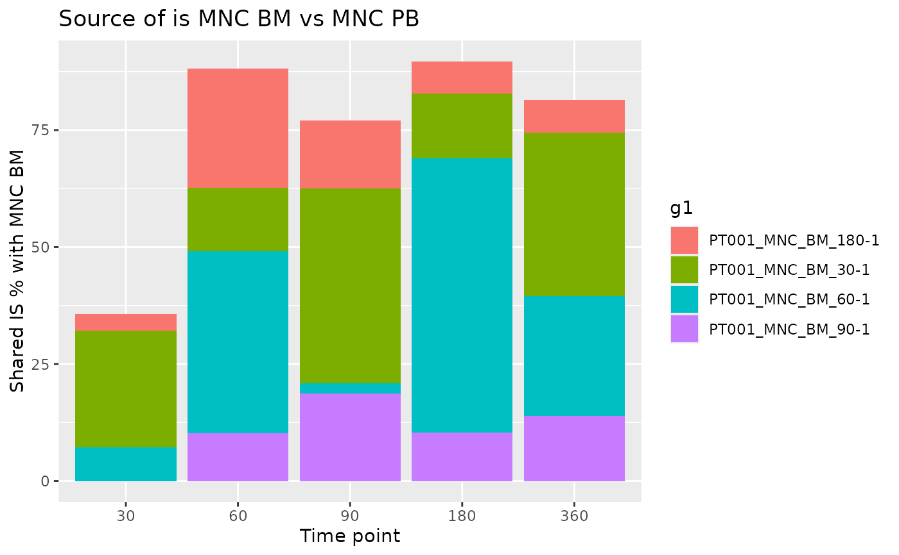

![[Stable]](figures/lifecycle-stable.svg) The function computes the sharing between a reference group of interest
for each time point and a selection of groups of interest. In this way
it is possible to observe the percentage of shared integration sites between
reference and each group and identify in which time point a certain IS was
observed for the first time.
The function computes the sharing between a reference group of interest
for each time point and a selection of groups of interest. In this way
it is possible to observe the percentage of shared integration sites between
reference and each group and identify in which time point a certain IS was
observed for the first time.
Arguments
- reference
A data frame containing one or more groups of reference. Groups are identified by
ref_group_key- selection
A data frame containing one or more groups of interest to compare. Groups are identified by
selection_group_key- ref_group_key
Character vector of column names that identify a unique group in the
referencedata frame- selection_group_key
Character vector of column names that identify a unique group in the
selectiondata frame- timepoint_column
Name of the column holding time point info?
- by_subject
Should calculations be performed for each subject separately?
- subject_column
Name of the column holding subjects information. Relevant only if
by_subject = TRUE
See also
Other Analysis functions:
CIS_grubbs(),
HSC_population_size_estimate(),
compute_abundance(),
cumulative_is(),
gene_frequency_fisher(),
is_sharing(),
sample_statistics(),
top_integrations(),
top_targeted_genes()
Examples
data("integration_matrices", package = "ISAnalytics")
data("association_file", package = "ISAnalytics")
aggreg <- aggregate_values_by_key(
x = integration_matrices,
association_file = association_file,
value_cols = c("seqCount", "fragmentEstimate")
)
df1 <- aggreg |>
dplyr::filter(.data$Tissue == "BM")
df2 <- aggreg |>
dplyr::filter(.data$Tissue == "PB")
source <- iss_source(df1, df2)
source
#> $PT001
#> # A tibble: 161 × 14
#> g1 g1_SubjectID g1_CellMarker g1_Tissue g1_TimePoint g2 g2_SubjectID
#> <chr> <chr> <chr> <chr> <int> <chr> <chr>
#> 1 PT001_M… PT001 MNC BM 180 PT00… PT001
#> 2 PT001_M… PT001 MNC BM 180 PT00… PT001
#> 3 PT001_M… PT001 MNC BM 180 PT00… PT001
#> 4 PT001_M… PT001 MNC BM 180 PT00… PT001
#> 5 PT001_M… PT001 MNC BM 180 PT00… PT001
#> 6 PT001_M… PT001 MNC BM 180 PT00… PT001
#> 7 PT001_M… PT001 MNC BM 180 PT00… PT001
#> 8 PT001_M… PT001 MNC BM 180 PT00… PT001
#> 9 PT001_M… PT001 MNC BM 180 PT00… PT001
#> 10 PT001_M… PT001 MNC BM 180 PT00… PT001
#> # ℹ 151 more rows
#> # ℹ 7 more variables: g2_CellMarker <chr>, g2_Tissue <chr>, g2_TimePoint <int>,
#> # chr <chr>, integration_locus <dbl>, strand <chr>, sharing_perc <dbl>
#>
#> $PT002
#> # A tibble: 77 × 14
#> g1 g1_SubjectID g1_CellMarker g1_Tissue g1_TimePoint g2 g2_SubjectID
#> <chr> <chr> <chr> <chr> <int> <chr> <chr>
#> 1 PT002_M… PT002 MNC BM 180 PT00… PT002
#> 2 PT002_M… PT002 MNC BM 180 PT00… PT002
#> 3 PT002_M… PT002 MNC BM 180 PT00… PT002
#> 4 PT002_M… PT002 MNC BM 180 PT00… PT002
#> 5 PT002_M… PT002 MNC BM 180 PT00… PT002
#> 6 PT002_M… PT002 MNC BM 180 PT00… PT002
#> 7 PT002_M… PT002 MNC BM 180 PT00… PT002
#> 8 PT002_M… PT002 MNC BM 180 PT00… PT002
#> 9 PT002_M… PT002 MNC BM 180 PT00… PT002
#> 10 PT002_M… PT002 MNC BM 180 PT00… PT002
#> # ℹ 67 more rows
#> # ℹ 7 more variables: g2_CellMarker <chr>, g2_Tissue <chr>, g2_TimePoint <int>,
#> # chr <chr>, integration_locus <dbl>, strand <chr>, sharing_perc <dbl>
#>
ggplot2::ggplot(source$PT001, ggplot2::aes(
x = as.factor(g2_TimePoint),
y = sharing_perc, fill = g1
)) +
ggplot2::geom_col() +
ggplot2::labs(
x = "Time point", y = "Shared IS % with MNC BM",
title = "Source of is MNC BM vs MNC PB"
)
